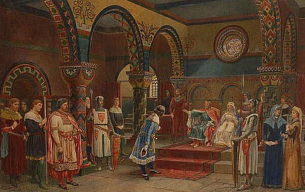

Medieval Law
Law During the Middle Ages
During the Middle Ages, legal systems were heavily influenced by kings and the Church. Monarchs had strong authority and created laws to maintain control over their kingdoms. At the same time, religious institutions played a major role in shaping legal decisions and moral standards.
Laws were not equal for everyone. Society was divided into classes, including nobles, knights, and peasants. Legal rights and punishments often depended on a person’s social rank.
The Feudal System and Justice
The feudal system structured medieval society. Kings granted land to nobles in exchange for loyalty and military service. Nobles controlled peasants who worked on their land. Justice was often handled locally by landowners, and punishments could be harsh.
Because power was concentrated in the hands of nobles and monarchs, ordinary people had limited legal protection.
The Magna Carta (1215)
A major turning point in medieval legal history was the Magna Carta, signed in 1215 in England. It forced the king to accept that his power was not absolute and that he must follow the law.
The Magna Carta established important principles, including the idea that no free man could be punished without a fair trial. This document laid the foundation for the concept of the rule of law, meaning that everyone, including rulers, is subject to the law.
- Strong influence of monarchy
- Church involvement in legal matters
- Unequal rights based on class
- Feudal justice system
- Magna Carta limiting royal power
| Feature | Description |
|---|---|
| Monarch Authority | Kings held supreme power |
| Church Influence | Religious law influenced civil law |
| Social Classes | Laws differed by rank |
| Magna Carta | Limited the king’s power |

Medieval law marked a transition period in legal history. Although laws were unequal and influenced by social hierarchy, important developments such as the Magna Carta introduced the idea that rulers must obey the law. This helped shape modern constitutional systems.
Go Back Up ↑